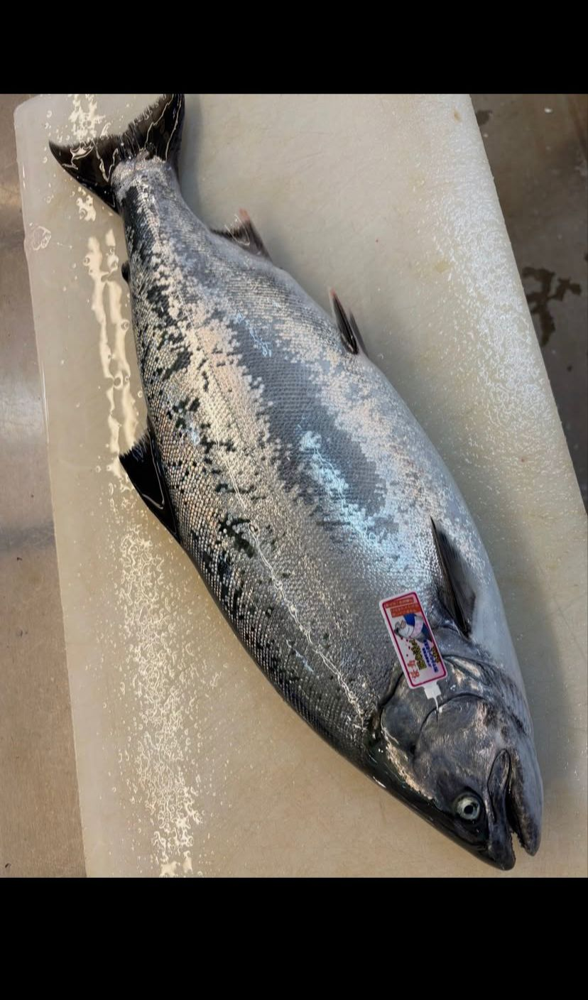
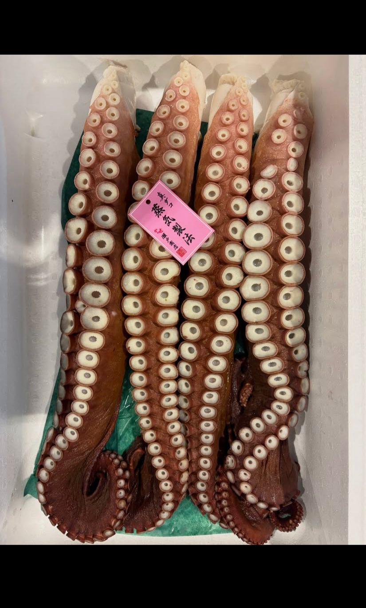
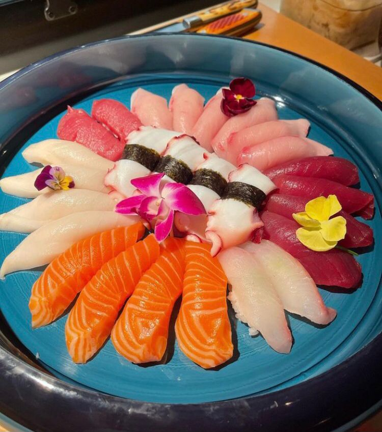

Pequenos pratos, frituras e grelhados — a energia social do repertório japonês.
O módulo cobre entradas como edamame, sunomono, tsukemono, tofu, hiyayakko, agedashi tofu, nasu dengaku e goma-ae, além de frituras como karaage, ebi fry, korokke e tempurá.
Também trabalha yakitori — negima, tsukune, saba, salmão, buri, atum, unagi e anago — e pratos como gyoza, takoyaki, okonomiyaki, chawanmushi, yakisoba, nabe e donburi, com tare, ponzu, goma dare e miso tare.
Edamame, hiyayakko, agedashi tofu e goma-ae.
Karaage, ebi fry, korokke e tempurá.
Negima, tsukune e peixes grelhados no espeto.
Gyoza, takoyaki, okonomiyaki, yakisoba, nabe e donburi.
Tare, ponzu, goma dare e miso tare.


Cozinheiros, sushiwomen/sushimen, chefs e empreendedores que já dominam o básico e querem avançar para uma abordagem tradicional e profissional.
Aulas (gravadas ou ao vivo, conforme o formato escolhido), materiais de apoio, exercícios práticos e certificado de conclusão.
Curso em vídeo com acompanhamento de 1 semana, ou turma ao vivo às terças e quintas com grupo de alunos e brinde exclusivo.
Tsukemono, tofu e preparos frios.
Karaage e tempurá com textura ideal.
Grelhados no espeto e pontos de cocção.
Gyoza, nabe, donburi e yakisoba.
Montagem de um menu de izakaya completo.
Esta formação faz parte da Mentoria Profissional Barô Shinkai. Toque abaixo para ver o investimento e escolher entre curso em vídeo ou turma ao vivo.
Valor referente à mentoria individual deste módulo. Formações completas e turmas ao vivo possuem faixas específicas — fale com a equipe para confirmar formato, datas e condições.